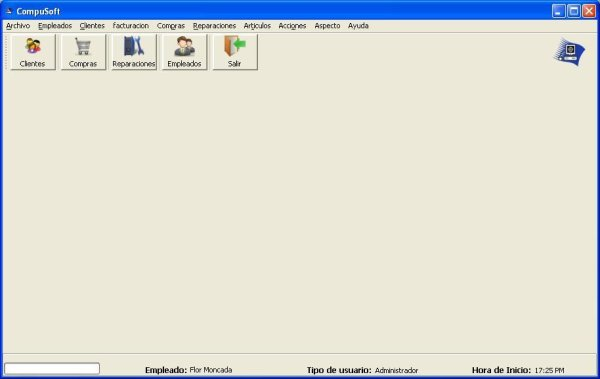
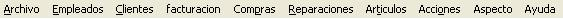
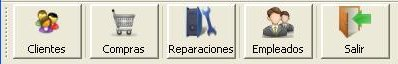

El menu principal es la primer pantalla que aparece despues de acceder al sistema y desde el que se podra acceder a todas las opciones del Sistema. El menu principal cuanta con una barra de menu con todas la opciones de la que dispone el sistema y una barra de herramienas con los acceso a las funciones mas comunes.
Tambien mostrara informacion sobre el usuario que inicio la sesion, el tipo de usuario y la hora de inicio de sesion en el sistema.
La barra de menu contiene todas las opciones del sistema.

Las opciones de la barra de menu son:
La barra de herramintas contiene las funciones mas utilizadas del sistema.
